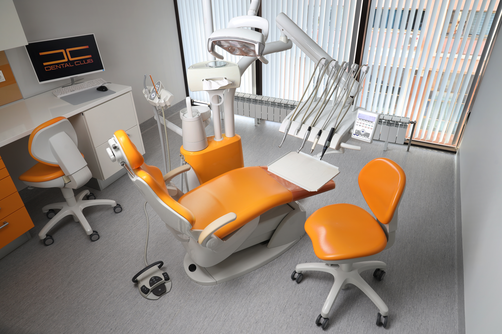
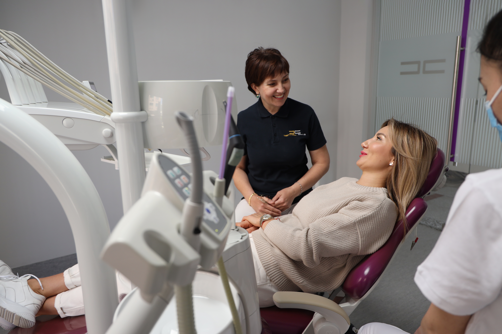
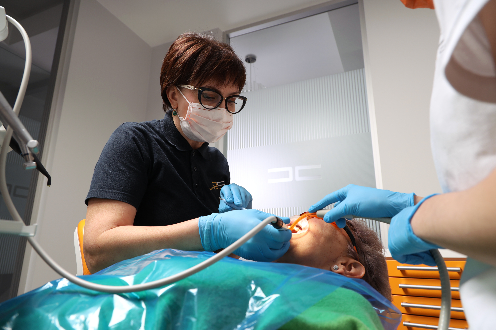
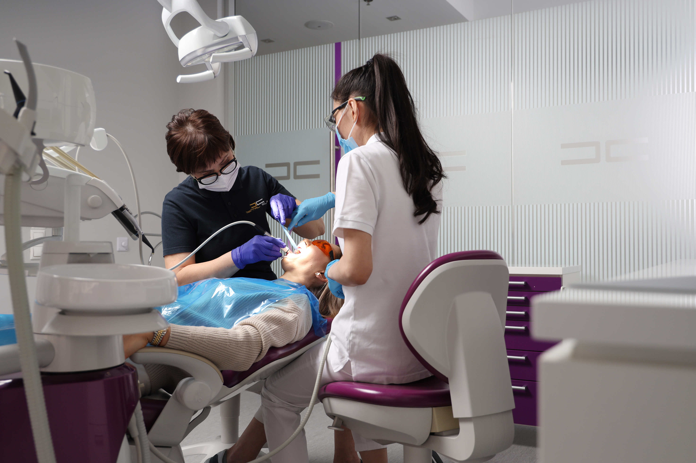
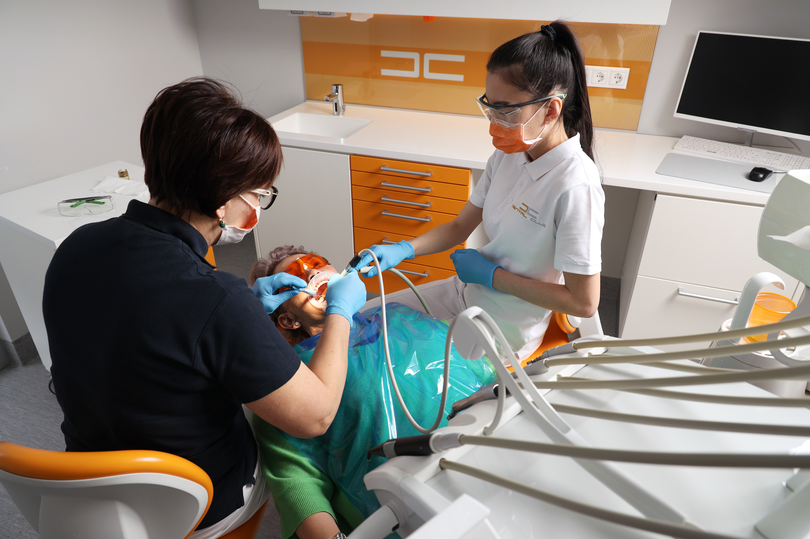
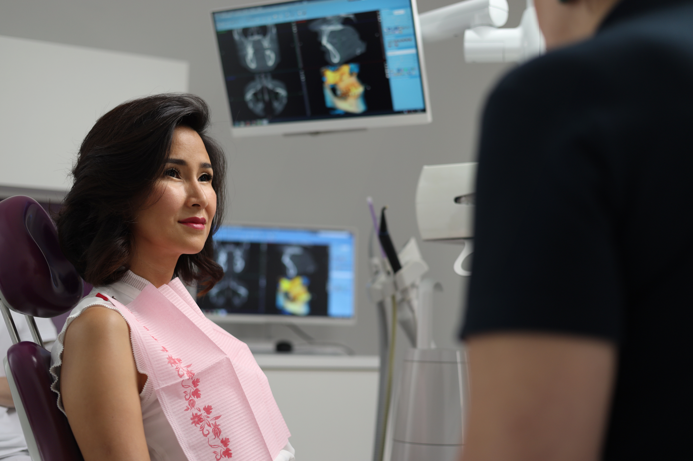

ПРОФИЛАКТИКА КАРИЕСА
Профилактика - это комплекс мер, направленных на предупреждение возникновения и развития стоматологических заболеваний.
Системный подход позволяет контролировать состояние ваших зубов и десен в течение всего периода наблюдения в Dental Club.


Мы оповещаем пациентов о необходимости произвести профосмотр и пройти профилактику. Специальная программа напоминает нам о вашем индивидуальном графике, исключая неточности в датах.
Регулярная профилактика по системе Dental Club в несколько раз снижает риск возникновения кариеса и заболеваний десен. Профосмотр мы рекомендуем проходить не реже двух раз в год.


Этапы системы Dental Club
- Оценка состояния полости рта, по степени окрашивания биоплёнки.
- Prophylflex (KaVo) — устранение биоплёнки и пигментации.
- Удаление зубного камня скалером Sonyflex (KaVo).
- Полировка фторированной пастой Proxyt (Ivoclar).
- Покрытие зубной эмали препаратом Fluor Protector (Ivoclar) для укрепления эмали.
- Индивидуальное обучение по правильному уходу за полостью рта в домашних условиях.
При необходимости, после этих этапов мы производим лечение дёсен аппаратом Vector (Dürr Dental).

